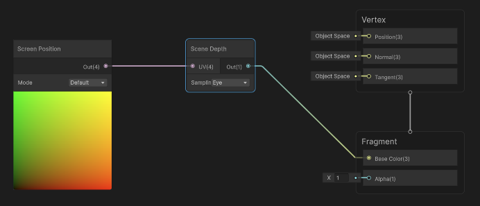
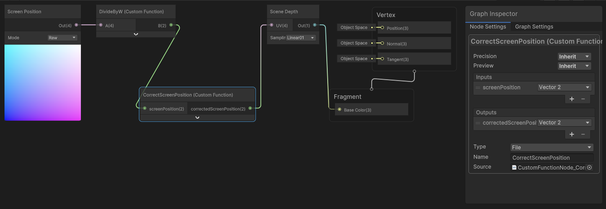

Shader graphs that sample screen-space textures can produce incorrect results on XR platforms that use variable rate rasterization (VRR). The pixels Unity renders no longer form a regular grid. The Screen Position node supplies the coordinates that most of these effects sample with, so the mode you select determines whether the effect samples the correct part of a texture.
To adapt a hand-coded shader instead, refer to Adapt custom shaders for foveated rendering. For an explanation of the two raster spaces and which coordinates each texture takes, refer to Introduction to foveated rendering.
Before you begin, make sure that:
The Screen Position node in Shader Graph provides coordinates that you often use to sample textures that foveated rendering affects. The Mode setting of this node determines the coordinate space the node provides. In most modes, the coordinate space is non-uniform when Unity renders with VRR. The Raw mode, in contrast, is linear in all cases.
The following table shows the coordinate space each mode provides:
| Mode | UV coordinate space with variable rate shading (VRS) and non-foveated rendering | UV coordinate space with variable rate rasterization (VRR) |
|---|---|---|
| Default | Linear | Non-uniform |
| Raw | Linear | Linear |
| Center | Linear | Non-uniform |
| Tiled | Linear | Non-uniform |
| Pixel | Linear | Non-uniform |
If you use the Screen Position node’s Raw mode to sample a non-uniform texture, the results are incorrect.
To illustrate the situation, consider a shader graph with a Screen Position node connected to a Scene Depth node that, in turn, connects to the base color of a fragment shader.

The shader renders colors according to the depth values in the scene depth buffer, and works correctly under foveated rendering. It uses the Default mode Screen Position node. That mode returns its results in the same space as the depth buffer and most other textures Unity creates. If you change the mode to Raw, the results are no longer correct when foveated rendering is active on a platform that uses VRR.
In the following example, the left image shows the shader on a quad, using the correct coordinate space to sample the scene depth buffer. The right image shows the same shader using the wrong coordinate space for the sampled texture. Notice how the sampled texture no longer lines up with the scene geometry:
If your shader graph depends on the Raw screen position and can’t use any of the other modes, remap the Raw coordinates with a Custom Function node. First, normalize the coordinates, and then use the foveated rendering shader functions inside a second node to remap them.
To remap the Raw coordinates:
Create a Custom Function node that references a file containing the following:
#include_with_pragmas "Packages/com.unity.render-pipelines.core/ShaderLibrary/FoveatedRenderingKeywords.hlsl"
#include "Packages/com.unity.render-pipelines.core/ShaderLibrary/FoveatedRendering.hlsl"
// Receives normalized screen coordinates (xy divided by w) from a preceding normalization node
void CorrectedScreenPosition_float(float2 normalizedScreenPosition, out float2 correctedScreenPosition)
{
correctedScreenPosition = FoveatedRemapLinearToNonUniform(normalizedScreenPosition);
}
Route the Raw coordinates through the node.
Note: You must create the Custom Function node to reference a file in this case, because if you use the String type, the #include statements are inside the function body and cause syntax errors. Set its input type to Vector2 to match the normalized float2 output from the preceding node.
For example, the following shader graph routes the Raw coordinates through two Custom Function nodes:

The first Custom Function node normalizes the Raw coordinates by dividing the x and y elements by the w element (B = A.xy/A.ww). The second Custom Function node uses FoveatedRemapLinearToNonUniform to map the linear coordinates to the non-uniform space when necessary. When foveated rendering isn’t active, or the current platform doesn’t use VRR for foveated rendering, FoveatedRemapLinearToNonUniform returns the linear coordinates unchanged. The shader therefore samples the scene depth correctly in all situations.